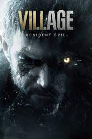
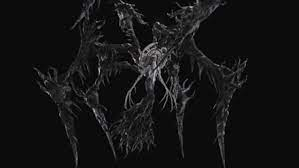
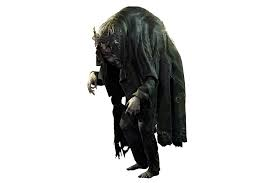
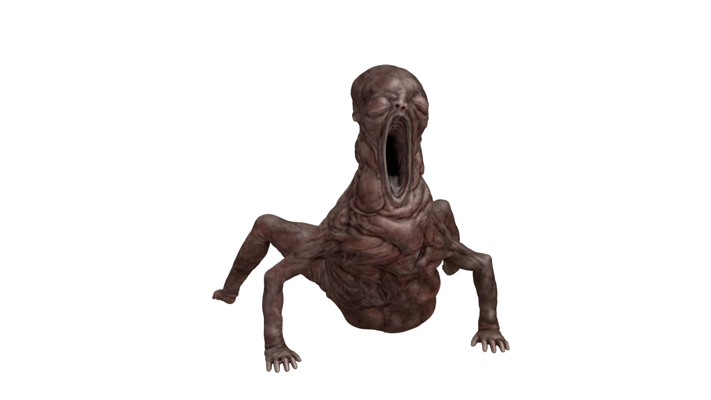

проект

|Посилання|
Сюжет
{Після подій в особняку родини Бейкерів у Луїзіані Ітан Уінтерс разом зі своєю дружиною Мією переїхали до Східної Європи, і через кілька років у них народжується дочка Роза. BSAA (Bioterrorism Security Assessment Alliance, Альянс протидії біотероризму), за допомогою якої було знищено розумну форму грибного життя під ім'ям «Евелін», заміло всі сліди, проте безпосередній учасник подій Кріс Редфілд продовжив спостереження за сім'єю Уінтерсів . Редфілд має відомості, що за Уінтерсами полює якась жінка на ім'я Міранда, яка знає про минулі події в Луїзіані.
Раптом у будинку Уінтерсів з'являється Кріс Редфілд на чолі загону BSAA «Мисливські пси» [2] , без жодних пояснень вбиває Мію і відвозить Ітана та його доньку у невідомому напрямку. Несподівано трапляється аварія, і Кріс із загоном бійців зникають, а дочка Ітана зникає.
Місцевістю, в якій опинився Ітан, правлять чотири демонічні антагоністи, яких місцеві жителі називають «лордами»: у замку — вампірша Альсіна Димитреску з трьома дочками, на фабриці заправляє Карл Гейзенберг, на водосховищі мешкає мутант Сальваторе Моро, на самоті лялькою Енджі. Всі вони підкоряються Матері Міранді, яку обожнюють залякані жителі навколишнього села [3] .
Ітану допомагає якийсь Герцог, мутант і торговець із села, який чомусь не підкоряється Міранді. Він розповідає, що Міранда весь цей час жила з ним під виглядом Мії, а Кріс намагався врятувати Вінтерсів. Також Герцог скаже, що дочка Ітана жива, а Міранда за допомогою неї хоче повернути свою давно померлу дочку. Ітан вирішує врятувати свою дочку, водночас допомагаючи мешканцям села. Він бореться з леді Дімітреску в її замку, потім вбиває Моро і Донну Беневієнто і врешті-решт долає Гейзенберга. Кріс виявляється живим і надсилає цілий загін бійців до села на допомогу Ітану. Ітан, тяжко поранений, йде на фінальний бій із Мірандою. Він втрачає свідомість і в нього виникають галюцинації, в яких він зустрічає Евеліну. Вона каже, що насправді у будинку Бейкерів Ітан загинув, померши на мегаміцелії. Він також став мутантом. Тому відрубані чи відкусані кінцівки Ітана відновлювалися.
Тим часом Кріс Редфілд зі своїм загоном із боєм пробиваються селом до центру поширення нової колонії мегаміцелію з метою його знищити. На півдорозі вони стають свідками десантування сил BSAA, про участь яких Редфілд не підозрював. У печерах, де розрісся мегаміцелій, Редфілд знаходить лабораторію, де виявляються свідчення співпраці Міранди та засновника корпорації Umbrella Озвелла Спенсера: Umbrella використовувала результати досліджень Міранди у своїх роботах, які призвели до розробки Т-вірусу. На початку XX століття Міранда втратила свою дочку Єву через епідемію іспанського грипуі з того часу шукала спосіб її відродити. Евеліна, лорди села та інші мутанти виявилися результатами невдалих експериментів у пошуках ідеального носія для відродження дочки. Дізнавшись про інцидент у Луїзіані, Міранда зрозуміла, що дочка Уінтерсів Розмарі є ідеальним кандидатом. Тут же в лабораторії Кріс знаходить та звільняє справжню Мію.
Уінтерс приходить до тями у фургоні Герцога. Загадковий торговець лікує Ітана та постачає зброю. Ітан знаходить Міранду. Вона не хоче віддавати свою нову дочку і намагається вбити Ітана. За допомогою вчасно подоспевшего Кріса він насилу здобуває перемогу. Вони намагаються вибратися через терни, але Ітан стрімко втрачає сили. Розуміючи, що йому не вибратися живим, Вінтерс забирає у Кріса детонатор від розміщеної Редфілдом у серці мегаміцелію вибухівки та відсилає Кріса геть. Кріс з Розою, Мія та загін бійців евакуюються із села. Вибух знищує колонію мегаміцелію та все село. Один із бійців загону «Мисливські пси» повідомляє Редфілду, що BSAA у висадці як солдат використовувала біозброю, демонструючи тіло одного з убитих оперативників. Шокований Кріс розгортає гелікоптер на штаб-квартиру BSAA в Європі, щоб розібратися в суті справи.}
Боси гри
|Леді Дімітреску|

Леді Алчіна Дімітреску (вимовляється Дімітреєск) — головний антагоніст у грі жахів на виживання Resident Evil Village 2021 року .
Вона є членом Чотирьох Домів , які служать Матері Міранді , правительці сільського села у Східній Європі. Будучи главою дому Дімітреску, Алкіна править великим замком разом зі своїми доньками Белою , Кассандрою та Даніелою Дімітреску .
[Її озвучила Кікуко Іноуе японською мовою та Меггі Робертсон англійською, яка також забезпечила для неї виконання захоплення руху.Велика частина минулого леді Дімітреску залишається загадкою, але вважається, що вона народилася приблизно в 1914 році, коли вона стала мутантом у віці 44 років, тобто приблизно в кінці 1950-х років, і, здається, перестала старіти в середині сорока. До того, як приєднатися до Four Houses, Дімітреску була джазовою співачкою під псевдонімом "Miss D", де вона часто співала з групою, відомою як Pallboys. Від одного зі своїх предків вона успадкувала певну хворобу в крові, яка за симптомами дуже схожа на вірус-попередник. Її відвезли в село, оскільки вона пережила зараження паразитом Cadou, і їй дали регенеративні здібності. Вона править великим замком як Матріарх родини Дімітреску, живучи з трьома жінками, яких вона вважає своїми дочками, Кассандрою, Белою та Даніелою.
Алкіна мутувала трьох жінок, які вижили та стали вразливими до низьких температур через те, що їх мутована форма тепер складається з мух, породжених з яєць каду, введених у їхні оригінальні людські тіла. Вона, як і більша частина місцевості, є членом темного культу, який служить істоті, відомій лише як «Мати Міранда», якій вона віддана, але також не проти діяти за власним бажанням проти її волі. Мати Міранда заразила її паразитом каду, наділивши Алкіну безлічом надзвичайних здібностей ціною потреби споживати велику кількість людської крові, щоб підтримувати себе через хворобу крові.
Хоча мати Міранда вважала Алькіну ідеальним кандидатом на посудину для своєї покійної доньки Єви, але бачила, що вона не ідеальна через її ненаситну жагу до крові. Алкіна стане членом Чотирьох Будинків разом із Карлом Гейзенбергом , Донною Бенев’єнто та Сальваторе Моро , служачи Міранді під їхніми будинками в селі. Незважаючи на союз між чотирма будинками, Алкіна часто конфліктувала з Гейзенбергом, вважаючи його лише дитиною.
Замок Дімітреску став сумно відомим, оскільки багато слуг, які приходили туди, не поверталися, а села почали дивитися на замок як на місце крові та смерті, і уникали цього району, якщо не в екстремальних обставинах. Алкіна також використовувала кров своїх жертв для створення вина під назвою Sanguis Virginis і часто заражала своїх жертв, які ставали відомими як Moroaicǎ та Samca. Більшість Moroaicǎ, можливо, були колишніми слугами, враховуючи, що родина Дімітреску, як відомо, замінювала дівчат протягом багатьох років.
Деякі з цих дівчат, які були звернені, намагалися втекти, особливо Інгрід, яку вбило і повернула Алкіна, коли вона намагалася залишити замок у двір. Крім того, Алкіна побоювалася, що вона постраждає від кинджала смертельних квітів, і сховала його в сімейному склепі, а також закрила всі вікна в замку, щоб захистити своїх дочок.
Після того, як мати Міранда захопила Ітана та Мію Вінтердочки, Розмарі, село занурилося в темряву, коли лікани вбили селян. Алкіна була серед Чотирьох Лордів, коли Гейзенберг захопив Ітана, і благав Міранду передати Ітана їй, але Міранда віддала Вінтерса Гейзенбергу. Потім Алкіна посперечалася з Карлом, але Міранда зупинила це, сказавши лордам, що її рішення остаточне, дозволяючи Гейзенбергу поставити Ітана в шоу. Після зустрічі Алкіна повернулася до свого замку, де чекала початку церемонії. Пізніше її дочки схопили Ітана, якому вдалося втекти з Гейзенберга, і привезли його до Алькіни. Бажаючи спожити його кров, Алкіна сказала своїм дочкам почекати, оскільки їй потрібно було сказати матері Міранді, що вона має Ітана, і прикувала Вінтерса до стелі.
Ітан зумів вирватися з ланцюгів і втекти з кімнати, і продовжив пригоди по замку, щоб знайти свою дочку. Вінтерс зіткнувся з Белою, Даніелою та Кассандрою в замку, але вбив їх, виявивши їхню слабкість до низьких температур. Знайшовши кальциновані останки своїх дочок, Алкіна розгубилася і вирішила помститися Ітану, незважаючи на те, що мати Міранда казала їй залишити його живим. Вона переслідує Ітана через замок, зумівши пробитися до підземелля, де вона обезголовила йому руку.
 Ітан зумів втекти і знову прикріпити руку, і йому вдалося дістатися сімейного склепу, щоб отримати кинджал. Алкіна схопила Ітана і встромила його кігтями, але він у відповідь вдарив її кинджалом, в результаті чого вона перетворилася на драконоподібну форму. Алкіна продовжив атаку на Ітана через верхню частину сімейного склепу, кажучи, що він ніколи більше не побачить свою дочку, оскільки чотири лорди мали Розмарі. Вона зазнала поразки і спробувала вбити Ітана, зруйнувавши склеп, але побачила, що він вижив, і прокляла його ім'я. Проклявши Ітана, вона кальцифікувалася і розсипалася на шматки, а Вінтерс зібрав уламок Розмарі.]
Ітан зумів втекти і знову прикріпити руку, і йому вдалося дістатися сімейного склепу, щоб отримати кинджал. Алкіна схопила Ітана і встромила його кігтями, але він у відповідь вдарив її кинджалом, в результаті чого вона перетворилася на драконоподібну форму. Алкіна продовжив атаку на Ітана через верхню частину сімейного склепу, кажучи, що він ніколи більше не побачить свою дочку, оскільки чотири лорди мали Розмарі. Вона зазнала поразки і спробувала вбити Ітана, зруйнувавши склеп, але побачила, що він вижив, і прокляла його ім'я. Проклявши Ітана, вона кальцифікувалася і розсипалася на шматки, а Вінтерс зібрав уламок Розмарі.]
Даніела Дімітреску
минуле
Даніела жила під іншим іменем у сільській місцевості в Східній Європі в невизначений час на початку 20 століття. Після того, як таємнича Мати Міранда взяла там контроль і почала заражати жителів села мутаміцетом, це призвело до того, що багато жителів села не змогли впоратися з грибком і померли; лише четверо обраних, у тому числі Альчина Дімітреску , господиня замку Дімітреску, успішно пережили суд. Дімітреску прагнув мати дочок, а потім наказав привезти до свого замку тіла трьох молодих жінок, у тому числі Даніели. За допомогою Міранди вона заразила трупи жінок різновидом м'ясоїдних жуків, які почали поїдати трупи в наступні дні.
Через кілька днів жуки розгризли м'ясо, а потім почали розпорошувати феромони. Вони зібралися навколо тіла й почали змінювати форму та колір, імітуючи тіло, яке щойно з’їли. Таким чином жуки сформували трьох нових істот, які згодом відкрили очі і були прийняті леді Дімітреску як дочки. Леді Дімітреску дала їм імена Даніела, Бела і Кассандра . Відтоді троє жили як члени сім’ї в замку Дімітреску та поділяли надмірну жагу леді Дімітреску до людської крові, а Даніела виділялася як особливо непередбачувана та жорстока. Як наслідок, слуги сильно зношувалися, їх відправляли до підвалу за найменші провини, де їх катували та висушували кров’ю Дімітрески, щоб залишити їх лише порожнім, бездушним лушпинням.
Сестри не старіли, тому що зрештою вони не були людьми. Вони також були надзвичайно стійкі до фізичних атак, оскільки жуки могли легко розбігатися та повертатися разом. Існування як рою також дозволило сестрам відмовитися від своїх людських форм і подорожувати як чистий рій, лише щоб потім знову об’єднати свої тіла. Єдиною слабкістю зграї жуків були раптові перепади температури; При температурі нижче 10 градусів за Цельсієм жуки стають жорсткими, тому людське тіло, яке вони утворюють, стає твердим і може бути атаковано. Відповідно, сестри ніколи не виходять із замку і всі вікна наглухо закриті.«Твій шлях нарешті привів тебе до мене? Усі вони колись приходять... Розкажи мені всі свої кляті фантазії!»
— Даніела
Даніела Дімітреску — лиходійка та бос у відеогрі жахів Resident Evil Village 2021 року . Разом зі своїми сестрами вона з’являється в регіоні замку Дімітреску, який є першим регіоном, який відвідує далеко від центрального села.
Бела Дімітреску
Бела — одна з трьох доньок Альчіни Дімітреску і, як і всі члени її родини, кровожерлива садистка. Після того як Ітан Вінтерс прибуває до замку Дімітреску, сестри можуть схопити Ітана і хочуть випити його крові, але втеча Ітана ламає їхні плани. Потім сестри починають прочісувати замок для Ітана. Оскільки їхні тіла складаються із зграї м’ясоїдних комах, вони фактично безтілесні та стійкі до фізичних атак, що Ітан швидко помічає, на свій розчарування. Однак він може виявити єдине слабке місце сестер, холод, і таким чином зробити бої у відповідних протистояннях набагато більш збалансованими.
Про неї говорив японською мовою Томо Муранака, англійською Ніколь Томпкінс і німецькою Леоні Крістін Ефінгер.У 2021 році будні сестер стають різноманітними, оскільки в замку з’являється незнайомець Ітан Вінтерс. Він шукає свою дочку Роуз, яку викрала її мати Міранда, але натрапляє на трьох сестер досить рано після того, як вони дізналися про нього. Коли він збирається відчинити двері, три сестри з’являються позаду нього в хмарах жуків і погрозливо наближаються до нього. Кассандра штовхає Ітана на землю та встромляє серп йому в ногу, тягнучи за собою Ітана по землі, коли він кричить від болю. Три сестри разом з Ітаном запливають до кімнати матері, щоб з гордістю представити свій улов Дімітреску. Після того, як Дімітреску скуштує кров Ітана, вона хоче повідомити про це матері Міранди, але обіцяє сестрам, що всі вони скуштують свою частку крові Ітана.
Щоб Ітан не зміг втекти, сестри підвішують його за руки до гаків у стелі. Потім вони виходять з кімнати, але невдовзі після цього розуміють, що Ітану вдалося вирватися та втекти. Потім сестри починають обшукувати замок, щоб схопити Ітана та випити його крові. Даніела стикається з Ітаном саме тоді, коли він заходить до бібліотеки. Оскільки в цій кімнаті є лише важке, майже незламне мансардне вікно, яке пропускає вітер, Даніела думає, що вона у відносній безпеці, і нападає на Ітана. Насправді він не може стріляти у вікно, тому Даніела захищена від небезпечного крижаного вітру та може безжально атакувати.Однак Ітан здатний просто відкрити вікно за допомогою важеля і впустити вітер. Даніела відразу охоплює холод, і жуки, з яких складається її тіло, стають твердими, тому все її тіло тверде, і його можна атакувати. Ітан негайно користується нагодою і нападає на Даніелу, яка з жахом розуміє, що Ітан хоче її вбити. Зіткнувшись із можливістю смерті, Даніела панікує та відступає у дальні кутки кімнати, де вона все ще не може втекти від вітру. У сутичці вона намагається захиститися своїм серпом і вбити Ітана, але він зрештою перемагає садистку Даніелу і смертельно ранить її. Коли вона вмирає, все її тіло кальцифікується і повністю твердіє, перш ніж повільно розвалитися.
Кассандра Дімітреску
Кассандра — одна з трьох доньок Алькіни Дімітреску, і, як і всі члени її родини, кровожерлива садистка. Після того, як Ітан Вінтерс прибуває в замок Дімітреску, сестри можуть схопити Ітана і хочуть випити його крові, але втеча Ітана ламає їхні плани. Потім сестри починають прочісувати замок для Ітана. Оскільки їхні тіла складаються із зграї м’ясоїдних комах, вони фактично безтілесні та стійкі до фізичних атак, що Ітан швидко помічає, на свій розчарування. Однак він може виявити єдине слабке місце сестер, холод, і таким чином зробити бої у відповідних протистояннях набагато більш збалансованими.
Англійською її озвучила Жанетт Маус, яка померла незадовго до виходу гри. Німецькою мовою говорила Мануела Айфріг.
Матір Міранда

Мати Міранда є одним із трьох головних антагоністів (разом з Освеллом Е. Спенсером і Джеймсом Маркусом ) франшизи Resident Evil . Блискучий біолог і лідер культу, відомого як Чотири Будинки , Міранда править селом у Східній Європі. Саме там вона виявила цвіль, утворену істотою, відомою як «Мегаміцет», і присвятила себе її вивченню в надії воскресити свою дочку Єву, яка померла від іспанки в 1919 році. Для цього Міранда викрала немовля дочка Ітана Вінтерса і планував використовувати її як посудину.
Щоб продовжити дослідження цвілі, вона стала головним науковцем The Connections і наглядачем за створенням Eveline , хоча вона розірвала свої зв’язки з ними після того, як співпраця виявилася марною для її власних цілей. Вона також була наставником Освелла Е. Спенсера , засновника корпорації Umbrella , що означає, що вона впливає на всі події попередніх ігор Resident Evil .
Японською мовою її озвучили Саяка Кіношіта в її справжньому образі, Кійоко Міядзава як «Відьма» та Акарі Хігучі як Мія Вінтерс. Англійською мовою її озвучили Мішель Люкс у її справжньому образі, Керол Станзіоне як «Відьма» та Кеті О'Хаган як Мія Вінтерс.Міранда народилася наприкінці 19-го століття у Східній Європі, а згодом народила дочку на ім’я Єва приблизно в 1909 році. Коли іспанка вразила село, Єва була однією з багатьох, хто помер від неї, завдавши Міранді великого горя, оскільки вона намагалася покінчити життя самогубством у печері. У північній печері Міранда виявила мегаміцет, грибковий суперорганізм, який дав їй підвищений інтелект і здібності, такі як безсмертя, мімікрія та регенерація. Побачивши, що він мав спогади про тих, хто контактував із суперорганізмом, Міранда використала своє безсмертя, здобуте завдяки мутації, щоб оволодіти мистецтвом біології та генетики, щоб експериментувати з мегаміцетом, щоб знайти спосіб воскресити свою дочку. Потім вона використала паразита Каду на місцевих селянах, щоб знайти для Єви посудину, але вони часто гинули або мутували на ліканів.
Незважаючи на ці невдачі, Міранда продовжувала експериментувати на селянах і натрапила на чотирьох людей, які успішно зв’язалися з паразитом Cadou. Цими чотирма особами були Алчіна Дімітреску , Карл Гейзенберг , Донна Бенев’єнто та Сальваторе Моро , але виявилося, що вони не можуть стати посудиною Єви через свою реакцію на паразита. Вона вирішила змусити їх виконувати її накази, таким чином створивши чотири будинки в європейському селі. Вона також стане «доброзичливою» правителькою села, і селяни називатимуть її «матір’ю Мірандою». Приблизно в цей час Міранда врятувала Освелла Е. Спенсера , британського дворянина, якого вона врятувала від нещасного випадку на лижах, і навчила його, як мутувати істоту в щось інше за допомогою інших форм життя, але обоє розійшлися, оскільки Спенсер хотів маніпулювати еволюцією людства. Незважаючи на це, Спенсер дуже поважав Міранду, вважаючи її джерелом натхнення для досягнення своїх цілей, коли він став засновником корпорації Umbrella .
Через століття Міранда познайомилася зі Зв’язками , які запропонували їй допомогу після того, як дізналися про її експерименти з пліснявою. Вона погодилась і дала їм частину мегаміцету та ДНК своєї дочки, і стала їхнім головним дослідником, який створив Евелін . Під час процесу Міранда зрозуміла, що Евелін не буде придатною для того, щоб бути судном Єви через те, що вона була біологічною зброєю, і, ймовірно, повернулася до села, оскільки Зв’язки продовжували створювати Евелін як біологічну зброю. Евелін втекла зі свого ув’язнення та заразила дослідницю Connections Мію Вінтерс і сім’ю Бейкерів у Далві, штат Луїзіана. Пізніше Міранда буде повідомлена, що Евелін була знищена і що Мія була вагітна дочкою, і зрозуміла, що дитина може бути ідеальною посудиною для Єви.
Слідкуючи за парою, Міранда вирішила викрасти Мію та поекспериментувала з нею для подальших досліджень, але прийняла форму Мії, щоб наблизитися до Роуз. Незважаючи на те, що вона не знала особистої історії пари, Міранді вдалося наслідувати Мію досить близько, щоб не попередити Ітана Вінтерса про зникнення його дружини.
Resident Evil: Village
У лютому Міранда залишалася під виглядом Мії, поки Кріс Редфілд не виявив її мотивів і не вирішив забрати Розмарі та вбити Міранду. Вона вдавала свою смерть, змусивши Ітана та Кріса повірити, що вона померла від ран, поки Редфілд забирав Розмарі та Ітана з дому. Міранда прокинулася і напала на транспорт, у якому перебували Розмарі та Ітан, забравши дитину та залишивши Ітана живим, щоб вона могла реалізовувати свої плани. Тоді вона розділила б тіло Розмарі на чотири фляги й дала кожному чотирьом лордам охороняти його. Її справжньою метою, коли її охороняли її чотири лорди, було знищити їх усіх Вінтерсом, щоб надати більше сили грибному кореню, про що Гейзенберг здогадався багато років тому. Крім того, Міранда не бачила більше користі від мешканців села і наказала Гейзенбергу змусити ліканів убити їх, щоб нагодувати Мегаміцета.
Готуючись до церемонії, Міранда була попереджена про присутність Ітана в селі та завадила орді ліканів вбити його. Потім вона прийняла форму «Ведьми» і коротко розмовляє з Ітаном, перш ніж залишити територію, коли лунає дзвінок, який закликає іншу орду ліканів. Коли Ітан зібрав одну з масок, щоб увійти в замок Дімітреску, Міранда вбила охоронця Луїзи Юліана біля її дому та повернулася в свою форму відьми, щоб маніпулювати Етаном. Мати Міранда повернулася, щоб зустріти чотирьох лордів після того, як Гейзенберг захопив Ітана, і дозволила Карлу наказати Вінтерсу провести коротку розвагу. Пізніше Міранда продовжила свої плани, і Алкіна повідомила їй, що Ітан втік з пасток Гейзенберга, і що вона схопила його у своєму замку. Пізніше Алкіна зателефонує матері Міранді, яка сказала їй не вбивати Ітана, незважаючи на втрату своїх дочок.
Пізніше матір Міранду бачать у її образі як Ведьма після того, як Ітан убиває Алькіну, і вона повідомляє Вінтерсу, що шлях, який він шукає, лежить через решту лордів. Роблячи це, Міранда маніпулює Ітаном у своєму плані змусити його вбити решту лордів, щоб зібрати Троянду для подальшого живлення кореня гриба в селі. Вона дозволяє Ітану зібрати крилатий ключ, що веде його до усунення Бенев'єнто, Моро та Гейзенберга, які намагалися домовитися з Вінтерсом, щоб допомогти йому усунути Міранду. Під час цих подій Редфілд і його команда зрозуміли, що Міранда має здатність до регенерації, і вирішили увійти в село, щоб встановити станції навпроти церкви та водосховища Моро. Пізніше Кріс повідомить Ітану, що він не вбивав справжню Мію, а допоміг йому зруйнувати фабрику Гейзенберга.
Міранда з'являється в образі Мії та знущається з Ітана, перш ніж показати свою кару та справжню форму та розповісти Вінтерсу про свої плани використати Роуз, щоб воскресити свою дочку. Потім вона вирвала серце Ітана, убивши його та залишивши завершити церемонію, в той час як великий гриб захистив її ділянку. Коли Роуз завершила церемонію, Міранда зрозуміла, що Роуз не воскресла як Єва, і що її сили слабшають, ймовірно, через надмірне використання або зв'язок Ітана з грибком. Потім Міранда бореться з Ітаном, поки не кидає його на землю. Коли вона намагається вдарити його, він кілька разів стріляє їй у голову, змушуючи її відкидатися назад, перш ніж кальцифікуватися та перетворитися на попіл. Ітан рятує Роуз і віддає її Крісу, перш ніж підірвати себе та село, знищивши Міранду назавжди.
Тіні Рози
Навіть смерті було недостатньо, щоб зупинити безумство Міранди. Вона наполягала в розумі вулика Мегаміцета, де її намагалися створити підроблені троянди, щоб бути посудиною Єви; хоча те, що її донька не перебувала в королівстві з нею, що в значній мірі мається на увазі, Міранда, було занадто далеко від розуму, щоб піклуватися про те, що її зусилля були марними. Міранда Евелін додала свій гнів захопила прошарок королівства і продовжувала втручатися в неї; з невдалим експериментом, який накинувся на неї через залишення. Міранда випробувала підроблені троянди зі своїм клоном Дюка, але всі вони були невдалими.
До 2036 року Міранда намагалася обманом змусити справжню Роуз увійти в царство та позбавити її влади. Це майже спрацювало, але Ітан також був у Мегаміцеті з ними, що дозволило Роуз отримати впевненість і повний контроль, назавжди вбивши Міранду.
Особистість
« Міранда божевільна „
~ Кріс підсумовує її
Міранда — божевільний лідер культу, який намагався використати Розмарі Вінтерс як посудину, щоб «оживити» свою покійну доньку Єву. Вона дбала лише про «оживлення» доньки, на відміну від свого учня Спенсера, який мріяв правити над людством як бог. Введена в оману, Міранда все ще вірила, що Роуз — це її донька, Єва, навіть коли церемонія провалилася, а Ітан сердито нагадав їй, що Роуз — його дочка, а не її, назвавши її психом і відьмою.
Вона також показує свою жорстоку та садистську сторону, коли мучить Ітана Вінтерса, особливо коли вона змінила себе на вигляд Мії Вінтерс. Незважаючи на її жорстокість по відношенню до нього, вона все ж вражена тим, що він вижив, коли дізналася, що він також ліплений. Вона насміхалася з нього, що дасть йому «мирну» і постійну смерть.

На своєму, здавалося, останньому подиху вона востаннє покликала свою дочку. Коли вона злилася з Мегаміцетом, вона стала жахливою та емоційно нестабільною, коли спробувала вбити Ітана та Кріса, але вмираючий Ітан покінчив життя самогубством, підірвавши бомбу, яку Кріс імплантував у Мегаміцет, щоб убити Міранду та себе.
Здібності та здібності
Мутована фізіологія : ходяча мутація дала їй безсмертне життя, а також значну регенерацію, завдяки якій вона могла регенерувати себе після п’яти послідовних пострілів у голову. Вона володіла неперевершеними навичками змінювати форму, вміла розкривати крила і навіть перетворюватися на зграю птахів, а також ідеально імітувала будь-кого тілом і голосом. Вона також мала величезну надлюдську силу, швидкість і витривалість до такої міри, що Гейзенберг вважав її дуже великою загрозою, якій можна протистояти без армії та її власних удосконалень.
Геніальний інтелект : Міранда надзвичайно розумна, будучи здібним ученим і біологом, а також видатним стратегом і досвідченим лідером завдяки століттям навчання та розуміння знань, отриманих нею завдяки її безсмертю.
Маніпуляція : як те, як вона легко пройшла повз, як Мія Вінтерс, і навіть Ітан не помітив, і крім того, вона була відомою як холодний і розважливий лідер Села, і маніпулював ними, як йому було зручно, і одним із прикладів цієї маніпуляції є те, як до неї ставляться селяни та три лорди (за винятком Гейзенберга) як до матері та релігійної фігури, аж до сліпого слідування їй.
Карл Гейземберг

У 2017-2020 роках мати Міранда дізналася, що Евелін , біологічна зброя, яка мала частину ДНК Єви, була переможена Ітаном Вінтерсом, яка була заражена пліснявою. У Ітана народиться дитина від його дружини Мії на ім’я Розмарі, яка була перенесена пліснявою і могла б стати ідеальною посудиною для Єви. Мати Міранда вирішила захопити дитину у Зим, рознесла дитину на частини і віддала Карлу свій торс у флягу. Гейзенберг залишив свою фабрику після повернення Матері Міранди, і зіткнувся з Ітаном, який намагався увійти в замок Дімітреску через камеру. Карл захопив його через металобрухт, використовуючи його магнетизм, і привів його до матері Міранди та інших лордів. Під час зустрічі Карл благав Міранду передати йому Ітана, і переміг перед тим, як вступити в суперечку з Алсіною через рішення «матері». Тоді Гейзенберг наказав Ітану влаштувати шоу, пройшовши через шахти від Ліканів і смертельні пастки.
Після влаштування шоу Гейзенберг повернувся на свою фабрику і продовжив працювати над своїми планами, а Ітан усунув Алкіну, Донну та Сальваторе. Карл зв’язався з Ітаном через телебачення, сказавши Вінтерсу піти в певний район до його шматка Рози, а після цього прийти на його фабрику. Коли Ітан прийшов на його фабрику, Гейзенберг поговорив з Вінтерсом, сказавши йому, що мати Міранда планує, щоб він убив усіх лордів, щоб зробити Ітана її примусом. Крім того, Гейзенберг сказав Вінтерсу, що вони можуть працювати разом, щоб убити Міранду, використовуючи сили Розмарі, але Ітан відмовився. Розгніваний, Гейзенберг кинув Ітана в глибину своєї фабрики, дозволивши йому розібратися зі Штурмом і його Солдатами. Карла чути через динаміки його фабрики,
 Ітан зумів втекти з фабрики після того, як мав справу з Солдатом і знищив Штурм, і натрапив на Гейзенберга, який трансформувався, щоб назавжди впоратися з Вінтерсом. Обидва билися на полі фабрики, Етан використовував власну самохідну артилерійську машину Гейзенберга, щоб відповідати своїй мутованій формі, але Карла відволікло, коли його фабрика була зруйнована вибухами Кріса Редфілда. Розгніваний втратою своєї армії, Гейзенберг створив металевий вихор в останній спробі вбити Ітана. Незважаючи на його спроби, Гейзенберг був убитий, кричачи, що він повинен убити Міранду, перш ніж вибухнути в крові та металі. Після його смерті мати Міранда зіткнулася з Ітаном, привітавши його з усуненням чотирьох лордів, щоб церемонія могла початися. Вінтерс зупинив матір Міранду і врятував свою доньку, але пожертвував собою, щоб знищити мегамікта та паразита цвілі. Незважаючи на те, що вони були ворогами, Ітан виконав мету Гейзенберга вбити Міранду заради помсти.
Ітан зумів втекти з фабрики після того, як мав справу з Солдатом і знищив Штурм, і натрапив на Гейзенберга, який трансформувався, щоб назавжди впоратися з Вінтерсом. Обидва билися на полі фабрики, Етан використовував власну самохідну артилерійську машину Гейзенберга, щоб відповідати своїй мутованій формі, але Карла відволікло, коли його фабрика була зруйнована вибухами Кріса Редфілда. Розгніваний втратою своєї армії, Гейзенберг створив металевий вихор в останній спробі вбити Ітана. Незважаючи на його спроби, Гейзенберг був убитий, кричачи, що він повинен убити Міранду, перш ніж вибухнути в крові та металі. Після його смерті мати Міранда зіткнулася з Ітаном, привітавши його з усуненням чотирьох лордів, щоб церемонія могла початися. Вінтерс зупинив матір Міранду і врятував свою доньку, але пожертвував собою, щоб знищити мегамікта та паразита цвілі. Незважаючи на те, що вони були ворогами, Ітан виконав мету Гейзенберга вбити Міранду заради помсти.
Моро

О, матінка Міранда ... Якщо це заради тебе, я б зробив усе! „
~ Сальваторе Моро.
« Це МОЯ територія! І я не відпущу вас! „
~ Сальваторе відразу після того, як заблокував Ітану вихід своїми ферментами.
« Будь тобі проклятий! Н-допоможіть мені! мати! МААААААА- „
~ Останні слова Моро, безпосередньо перед тим, як він вибухне.
Сальваторе Моро є головним антагоністом у грі жахів на виживання Resident Evil Village 2021 року .
Він є членом Чотирьох Будинків , які служать під керівництвом Матері Міранди , разом з Альчіною Дімітреску , Карлом Гейзенбергом і Донною Бенев'єнто . Безперечно найбільш сильно мутований і униканий з чотирьох лордів, Моро називає сільське водосховище своїм домом, який також виступає як поле для експериментів.
Його озвучували Тайсуке Нісімура японською мовою та Джессі Піментел англійською, останній також озвучував Лукаса Бейкера в Resident Evil 7: Biohazard .Про минуле Сальваторе відомо небагато, але він є членом родини Моро, знатної родини, яка уклала союз із сім’єю Дімітреску, Бенев’єнто та Гейзенбергів у селі. Також мається на увазі, що він або його сім'я є лікарями, оскільки в його резервуарі розташована клініка. Його викрала біолог Міранда, яка хотіла знайти ідеальну посудину для своєї покійної дочки Єви. Однак Міранда виявила, що паразит Cadou майже не зв’язувався із Сальваторе, а також відзначила, що його мозкова функція була на диво низькою. Через його психічні порушення та реакцію на паразита Міранда вирішила зробити його членом Чотирьох Будинків, щоб служити їй. Ставши членом, Сальваторе став співправителем села разом з Алкіною Дімітреску, Карлом Гейзенбергом і Донною Бенев'єнто.
Паразит і цвіль кардинально мутували Сальваторе, в результаті чого він виглядав як горбатий, укритий пухлиноподібними речовинами. Він також буде змушений жити біля води, оскільки мутація дала йому здібності, схожі на водні, і виявила, що вода буде підтримувати його стан у безпеці. Через свою незахищеність Сальваторе мав накидати на спину накидку, але все одно вважався огидним через свою мутацію. Через свою зовнішність і незахищеність Сальваторе усамітнився біля водойми своєї родини, але прагнув схвалення матері Міранди.
Бажаючи показати себе хорошим сином Міранди, він проводив експерименти на селянах у сімейній клініці, але безуспішно, оскільки вони перетворилися на ліканів .
Resident Evil Village
Мати Міранда незабаром дізнається, що біологічну зброю, Евелін , було знищено, але що Ітан і Мія Вінтерс мали доньку на ім’я Розмарі, яка перенесла інфекцію. Побачивши, що Розмарі може стати ідеальною посудиною для Єви, Міранда викрала дитину і розділила немовля на частини. Вона дала Сальваторе флягу, в якій були руки Рози, і доручила йому охороняти її. Моро боявся, що якщо церемонія вдасться, Міранда відречеться від нього і його послуги більше не знадобляться. Вперше він з'явився під час зустрічі з Алькіною, Карлом і Донною, коли Ітан був схоплений Гейзенбергом. Після того, як мати Міранда віддала Ітана Гейзенбергу, Сальваторе спостерігав, як Ітана змусили взяти участь у шоу, де він боровся за своє життя під час нападу машин Карла та ліканів.
Сальваторе повернувся до свого резервуару, щоб охороняти свою флягу, але Ітану вдалося вбити Алькіну та Донну та забрати флягу, поки Моро дивився телевізор. Сальваторе благав Ітана не красти флягу, і спробував повідомити Вінтерсу, що Міранда планує привести свою мертву дочку через Роуз. Однак Сальваторе побачив можливість використати свої ферменти, щоб запобігти втечі Ітана, і висміяв Вінтерса за те, що він занадто багато говорив, перш ніж покинути свою кімнату. Тримаючи Ітана в пастці, Моро побачив, що загін Гончих Вовків проник у його резервуар, і перетворився на його монстра, щоб убити їх. Однак йому це не вдалося, і він дотягнувся до Ітана, сказавши йому, що вихід під водою і що Міранда вже готується до церемонії.
Моро знову перетворився на форму монстра і спробував убити Ітана, але зазнав невдачі, оскільки Вінтерсу вдалося випустити воду з резервуара. Сальваторе продовжував переслідувати Ітана, звинувачуючи його в тому, що він змусив Міранду не любити його, а також використовував його кислу блювоту під час бою. Врешті-решт він зазнав поразки та кричав на Міранду, перш ніж його тіло розширилося та перетворилося на плоть, кров і кислоту.
Дії Сальваторе були марними, оскільки Ітану вдалося вбити матір Міранду та врятувати доньку, але він пожертвував собою, щоб врятувати свою родину та загін Собаки Вовка від Мегаміцету.
Зовнішній вигляд
« Третій – Моро. Істота зі спотвореної плоті „
~ Герцог про Моро.
З чотирьох лордів Моро є найменшою людиною, тому що він єдиний з них, який успішно зв’язався з паразитом Каду.
Його шкіра хвороблива, блідо-зелено-сіра, з помітною згорбленою спиною завдяки великим наростам і неймовірно низькому зросту, його волосся зникло, за винятком кількох тягучих чорних ковтунів. Руки та ноги Моро перетинчасті, як у жаби, а його зуби — загострені ікла, а також зябра на шиї. Намагаючись приховати свої вади, Моро одягає плащ і мантію на все тіло, а також капюшон, прикрашений короною з кісток.
Після свого перетворення Моро стає величезним напівводним монстром, схожим і на рибу, і на саламандру, з десятками вирячених чорних очей, пащею, яка розділилася на чотири окремі частини, а його язик є оригінальним тілом Моро.
Особистість
« Їм доведеться поважати мене, якщо я тебе вб’ю. „
~ Моро Ітану Вінтерсу.
Моро характеризується своєю слабкою і покірною особистістю. Його, як правило, не люблять інші лорди, і він жадає схвалення та прийняття, тому він відчайдушно прагне догодити матері Міранді, щоб відчути, що вона її любить. Він прагне бути її улюбленою «дитиною», і тому спустошений, коли підозрює, що Роуз займе цю посаду, і тому він буде відкинутий нею. Його інтелект порушений, оскільки мати Міранда зазначила, що він «напрочуд низький», і він має дещо дитячу особистість і народну мову. Однак невідомо, чи він народився таким, чи це є побічним ефектом трансплантації Каду.
Незважаючи на те, що Моро виглядає неймовірно дурним і довірливим, він все ще здатний на деякі хитрощі. Коли Ітан вихоплює один із фрагментів Роуз прямо з-під його носа, Сальваторе вдає, що ридає, і розмовляє з Ітаном достатньо довго, щоб заблокувати йому вихід речовиною, а пізніше заливає вихід із резервуару, щоб запобігти втечі Ітана. Крім того, Моро зміг експериментувати з місцевими жителями села за допомогою Каду і навіть мав уяву впорснути одному суб’єкту вовчу кров, створивши Vârcolac, хоча Моро вважав його особистим домашнім улюбленцем і не зміг його належним чином стримати.
Після серйозних мутацій він стає схвильованим і впадає в оману, часто радісно вигукуючи та намагаючись показати Міранді всю свою силу, без потреби стрибаючи у воду та з неї, демонструючи гордість, яку він має тепер, коли він не поступається інші лорди. Під час битви з босом він більше хвилюється про те, як мати Міранда сприймає його і любить вона його чи ні. Незважаючи на рішучість убити Ітана, щоб завоювати повагу, Моро все ще демонструє свою покірливу особистість навіть у своїй жахливій формі та реагує благальним і відчайдушним тоном, коли йому завдають шкоди, стверджуючи, що він не хоче вмирати, і благаючи Ітана припинити.
Його останні слова — це відчайдушний крик до «матері» Міранди про допомогу.здібності
На відміну від інших чотирьох лордів, тіло Моро успішно зв’язалося з паразитом Каду. Однак це призвело до того, що Моро перетворився на жахливе рибоподібне чудовисько із зябрами, плавальним міхуром, перетинками на руках і ногах, згорбленою спиною та деформованим обличчям. Ріст його клітин також призвів до того, що великі частини його резервуару були покриті товстими липкими ферментами, які можна знищити лише вибухівкою. Він отримав можливість маніпулювати ферментною масою у своїй схованці за бажанням, завдяки чому великі її частини з’являлися нізвідки.
Після трансформації Моро може блювати велику кількість зеленої кислоти, а пізніше еволюціонує до циклопічної рибоподібної істоти, здатної здійснювати величезні стрибки з води, пливти зі значною швидкістю та може з’їсти головного героя одним укусом. Вийшовши з води, він трохи менш рухливий, але все ще може повзати, використовуючи свої гуманоїдні руки, і атакує, врізаючись своїм масивним тілом в Ітана або намагаючись його вкусити.
Крім того, єдине вразливе місце Моро - це його гуманоїдне тіло, розташоване всередині пащі звіра, яке досить міцне і може отримати багато пошкоджень, тоді як його зовнішня форма практично непроникна для звичайних боєприпасів.

Донна Беневєто

Донна Бенев’єнто — головний антагоніст у грі жахів на виживання Resident Evil Village 2021 року .
Вона є членом Чотирьох Будинків , які служать під керівництвом Матері Міранди , разом з Алкіною Дімітреску , Карлом Гейзенбергом і Сальваторе Моро . Власниця дому Бенев’єнто та вправна лялькарка Донна компенсує те, що вона фізично найслабкіша з чотирьох лордів, розумно цілеспрямовано використовуючи галюцинації, викликані рослинами в її саду.
Її озвучили Міюкі Сато японською мовою та Енді Норріс англійською.Донна Бенев'єнто була єдиною дочкою у своїх батьків і боялася інших через шрам на обличчі. Її батько побудував би ляльку на ім’я « Енджі », щоб складати компанію Донні, і вона розвинула глибоку одержимість ляльками до такого ступеня, що говорила лише через них. Було показано, що ця дезадаптивна поведінка була досить сильною, що призвело до деяких припущень, що у неї розвинулася форма дисоціативного розладу ідентичності.
Після смерті батьків Донна вирішила ізолюватися від решти села і витрачала свій час на створення ляльок. Потім її усиновила мати Міранда, біолог, яка експериментувала з мегаміцетом, намагаючись знайти ідеальну посудину для своєї покійної доньки Єви. Хоча Донна адаптувалася до плісняви та паразита Каду, Міранда виявила, що Донна була «недорозвиненою» та надто психічно хворою, щоб стати посудиною для Єви, але вирішила, щоб Донна зберегла будинок своєї сім’ї, а також її статус серед інших членів Четвірки . Будинки .
Вона служила б матері Міранді разом з Алкіною Дімітреску, Карлом Гейзенбергом і Сальваторе Моро, але спілкувалася б лише через Енджі. Донна жила в маєтку своєї сім’ї, будинку Бенев’єнто, де вона контролювала долину завдяки своїй здатності маніпулювати баченнями, створюваними галюциногенним пилком рослин, які вона вирощувала, щоб мучити своїх жертв. Отримавши можливість маніпулювати рослинами, вона дозволила своєму садівнику знову побачити свою родину, але мається на увазі, що вона могла зробити це, щоб мучити його.Коли Мати Міранда дізналася, що Вінтерс народила ідеальну посудину, вона вирішила втілити в життя свій план захоплення дитини і дала Донні частину тіла Роуз, щоб вона охороняла. Під час зустрічі з матір'ю Мірандою та іншими лордами Донна спілкується через Енджі під час перегляду шоу Гейзенберга, коли Вінтерса переслідують лікани та його пастки. Після ліквідації Дімітреску в їхньому замку, Ітан дізнається, що частини тіла Роуз були розділені та передані кожному лорду, і змушений їхати до будинку Бенев’єнто. Донна використала свої галюциногени, щоб змусити Ітана побачити Мію, а пізніше змушує його галюцинувати, змушуючи його розгадувати головоломку за допомогою імпровізованої ляльки.
Вона продовжує знущатися над ним, відтворюючи запис голосу Мії та створюючи гротескну істоту, яку називають «Крихітка» через підвал. Передбачається, що Донна створила істоту і змусила Ітана галюцинувати, коли він втратив свою зброю, і після того, як йому вдалося втекти від немовляти, говорить йому, що він не може покинути її дім. Потім вона посилає своїх ляльок напасти на нього, змушуючи Ітана шукати Енджі та тричі вдаряючи ляльку ножем у голову. Після востаннього удару Енджі ножицями Ітан виходить зі своїх галюцинацій, побачивши, що він убив Донну, а не Енджі. Ітан усвідомлює, що весь час боровся з Донною, а труп Бенвіенто кальцинується і розсипається на порох. Після її смерті Ітан збирає флягу та вбиває інших лордів і зупиняє Матір Міранду.
Здібності та здібності
Донна має владу керувати ляльками, а її головною «помічницею» є неприваблива на вигляд лялька на ім’я Енджі. Завдяки своїй мутації вона може виділяти феромон, який може контролювати рослини, заражені мегаміцетом. Вона також може викликати надзвичайно сильні галюцинації у того, хто вдихнув пилок будь-якої з її рослин.
 Вона, мабуть, найслабша з чотирьох лордів з точки зору фізичних можливостей, тому вона покладається на свої сили, щоб бути загрозою. У той час як вона фізично слабка і вважається психічно нестабільною, її надзвичайно високий інтелект виявляється на повну; вона точно знала, як заподіяти Ітану біль, де і коли вдарити, і навіть використала його найглибші страхи проти нього, щоб спотворити його реальність, поставити під сумнів його здоровий глузд і, зрештою, майже зуміла зірвати його втечу.Сама Донна Бенев'єнто під час гри мало розмовляє. Однак більшу частину роботи виконає її лялька Енджі. Енджі грає з Ітаном, коли Ітан приходить до дому Бенев’єнто. Коли Ітан був схоплений Гейзенбергом, Донна здебільшого мовчала весь час, поки Дімітреску та Гейзенберг сперечалися про те, хто зможе вбити Ітана, а Енджі заохочувала їх до бою. Вона також мала хорошу самосвідомість: вона знала, що не зможе впоратися з Вінтерсом, тож поставила його крізь психічно складні випробування фізичного, психологічного та емоційного хвилювання, яке посилювалося галюцинаторним впливом флори, і харчувався його найглибшими страхами, щоб боротися з ним.
Судячи з галюцинацій, які вона викликає в голові головного героя, Донна любить гратися зі своїми жертвами, використовуючи їхню внутрішню боротьбу та страхи, щоб порушити їхній розум. Наприклад, бачення Ітана в основному обертаються навколо долі Мії та Роуз. Вона сипає ще більше солі на рани скорботного чоловіка, демонструючи постійні нагадування про бурхливі стосунки між ним і Мією, а також про смерть Роуз у вигляді гігантської, огидної гидоти, схожої на дитину.
Хоча Енджі та Донна представлені як окремі сутності, під час поразки лялькаря з’ясовується, що той, хто ховався від Ітана і отримав удар ножицями, насправді був самою Донною, тоді як головний герой бачив лише Енджі, яка пливла від нього незалежно, маючи на увазі, що вона або набагато менш мовчазна та стабільна, ніж здається спочатку, або має роздвоєння особистості.
Існують докази того, що Донна не є суто садисткою чи зловмисницею, оскільки, як згадується в щоденнику її садівника, вона порадила йому посадити заражені жовті квіти біля могили його померлої дружини та подарувала йому бачення його коханої людини, проте ймовірно, що вона якось убила його після того, як заманила чоловіка до свого будинку та пообіцяла можливість возз’єднатися з його родиною.Донна Бенев'єнто одягнена в траурне вбрання. Також кажуть, що у неї є шрам на обличчі та мутований абсцес, відомий як Cadou, що росте в її правому оці.
Вона, мабуть, найслабша з чотирьох лордів з точки зору фізичних можливостей, тому вона покладається на свої сили, щоб бути загрозою. У той час як вона фізично слабка і вважається психічно нестабільною, її надзвичайно високий інтелект виявляється на повну; вона точно знала, як заподіяти Ітану біль, де і коли вдарити, і навіть використала його найглибші страхи проти нього, щоб спотворити його реальність, поставити під сумнів його здоровий глузд і, зрештою, майже зуміла зірвати його втечу.Сама Донна Бенев'єнто під час гри мало розмовляє. Однак більшу частину роботи виконає її лялька Енджі. Енджі грає з Ітаном, коли Ітан приходить до дому Бенев’єнто. Коли Ітан був схоплений Гейзенбергом, Донна здебільшого мовчала весь час, поки Дімітреску та Гейзенберг сперечалися про те, хто зможе вбити Ітана, а Енджі заохочувала їх до бою. Вона також мала хорошу самосвідомість: вона знала, що не зможе впоратися з Вінтерсом, тож поставила його крізь психічно складні випробування фізичного, психологічного та емоційного хвилювання, яке посилювалося галюцинаторним впливом флори, і харчувався його найглибшими страхами, щоб боротися з ним.
Судячи з галюцинацій, які вона викликає в голові головного героя, Донна любить гратися зі своїми жертвами, використовуючи їхню внутрішню боротьбу та страхи, щоб порушити їхній розум. Наприклад, бачення Ітана в основному обертаються навколо долі Мії та Роуз. Вона сипає ще більше солі на рани скорботного чоловіка, демонструючи постійні нагадування про бурхливі стосунки між ним і Мією, а також про смерть Роуз у вигляді гігантської, огидної гидоти, схожої на дитину.
Хоча Енджі та Донна представлені як окремі сутності, під час поразки лялькаря з’ясовується, що той, хто ховався від Ітана і отримав удар ножицями, насправді був самою Донною, тоді як головний герой бачив лише Енджі, яка пливла від нього незалежно, маючи на увазі, що вона або набагато менш мовчазна та стабільна, ніж здається спочатку, або має роздвоєння особистості.
Існують докази того, що Донна не є суто садисткою чи зловмисницею, оскільки, як згадується в щоденнику її садівника, вона порадила йому посадити заражені жовті квіти біля могили його померлої дружини та подарувала йому бачення його коханої людини, проте ймовірно, що вона якось убила його після того, як заманила чоловіка до свого будинку та пообіцяла можливість возз’єднатися з його родиною.Донна Бенев'єнто одягнена в траурне вбрання. Також кажуть, що у неї є шрам на обличчі та мутований абсцес, відомий як Cadou, що росте в її правому оці.
дитина

Малюк — другорядний антагоніст у грі жахів Resident Evil Village 2021 року . Це гігантський гротескний людиноподібний монстр, який полює на головного героя та намагається їх з’їсти. Можливо, це під причетною владою або смертельною ілюзією, створеною Донною Бенев'єнто , яка переслідує Ітана Вінтерса по всьому будинку Донни.Як випливає з назви, Дитина має багато схожих характеристик з людським немовлям. Крім того, що ця істота має деякі подібні фізичні якості, вона також розмовляє подібним чином. Під час переслідування з Ітаном він часто говорить «мама» і «тато». Як і більшість немовлят молодшого віку, малюк запихає в рот речі, які йому не слід, наприклад, Ітан, коли наближається надто близько, і при цьому вимовлятиме «Смачно».
Перебуваючи в резиденції Донни, Ітан став жертвою рослин Донни, заражених пліснявою, і почав відчувати галюцинації. Це, швидше за все, означає, що Дитина — це лише ілюзія. Якщо це так, то це може означати внутрішні страхи Ітана щодо його дочки Розмарі та того, що мати Міранда та Чотири Будинки зроблять з нею.
Незважаючи на те, що Малюк великий і явно перевершує Ітана, мутована форма Малюка ускладнює орієнтування в оточенні. Йому дуже важко пересуватися по резиденції, при кожному русі нахиляючи голову вгору-вниз і тягнучи все тіло тільки за допомогою рук. Він також, здається, не має дуже хороших органів чуття, окрім зору, оскільки не може знайти Ітана, який ховається всередині чи під речами.Дитина виглядає не так, як звичайна людська дитина, а більше схожа на плід із вадами розвитку. У нього два великі чорні очі-намистинки, лиса голова та гігантський слинявий беззубий рот, який тягнеться вниз по шиї. Його шкіра є сумішшю засмаги й червоного, ніби він нещодавно народився. Його основне тіло плоске і звернене до підлоги, і воно ходить на четвереньках, його руки виконують більшу частину роботи, а ноги зігнуті назад, подібно до коника.Поки Ітан намагається дістати ключ від скриньки, Малюк з’явиться в кінці коридору, який веде до лялькової майстерні. Потім він почне свою погоню з Ітаном, якому доведеться втекти на кухню. Пізніше, після того, як Ітан отримає запобіжник, Малюк знову з’явиться і вижене Ітана з кухні та спальні, лише для того, щоб він втік від цього, коли досягнув медичної кімнати. Дитину не побачать, поки Ітан не дійде до ліфта. Йому доведеться успішно закрити його ворота, перш ніж Малюк досягне його. Як тільки він це зробить, Крихітка буде кричати на нього, коли він втече в ліфті.
Виходячи з природи істоти, вона, швидше за все, була вбита або тоді, коли Бенев’єнто був убитий Ітаном, або коли Ітан знищив Мегаміцет.